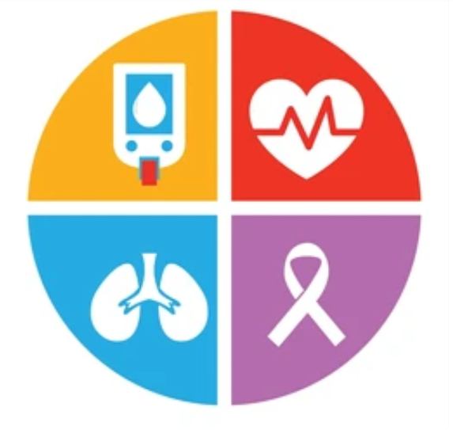
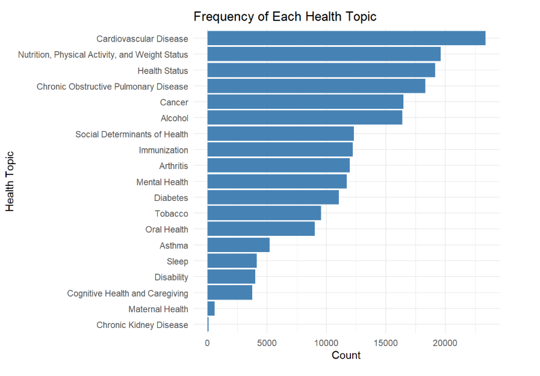
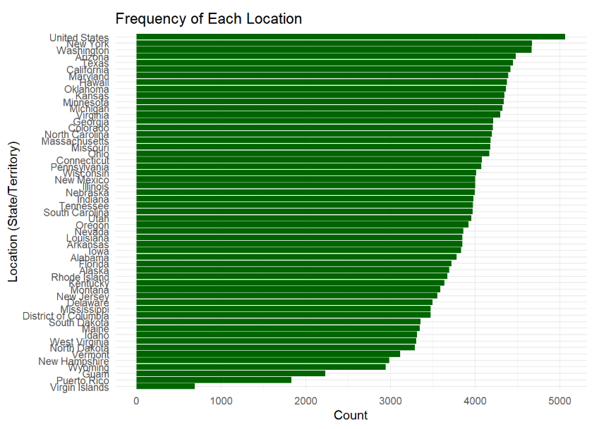
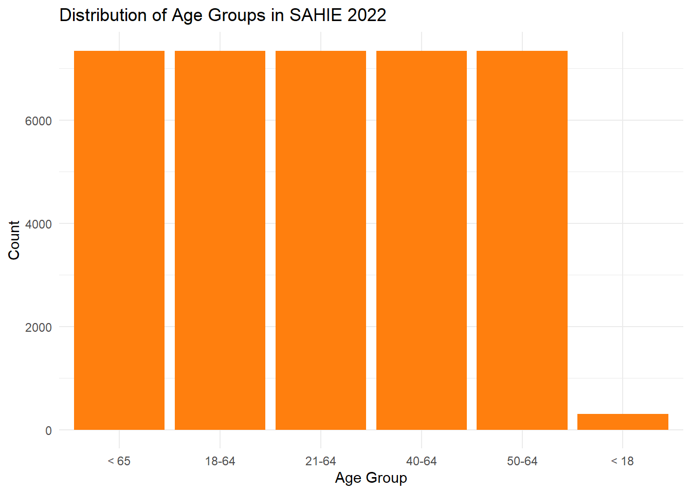
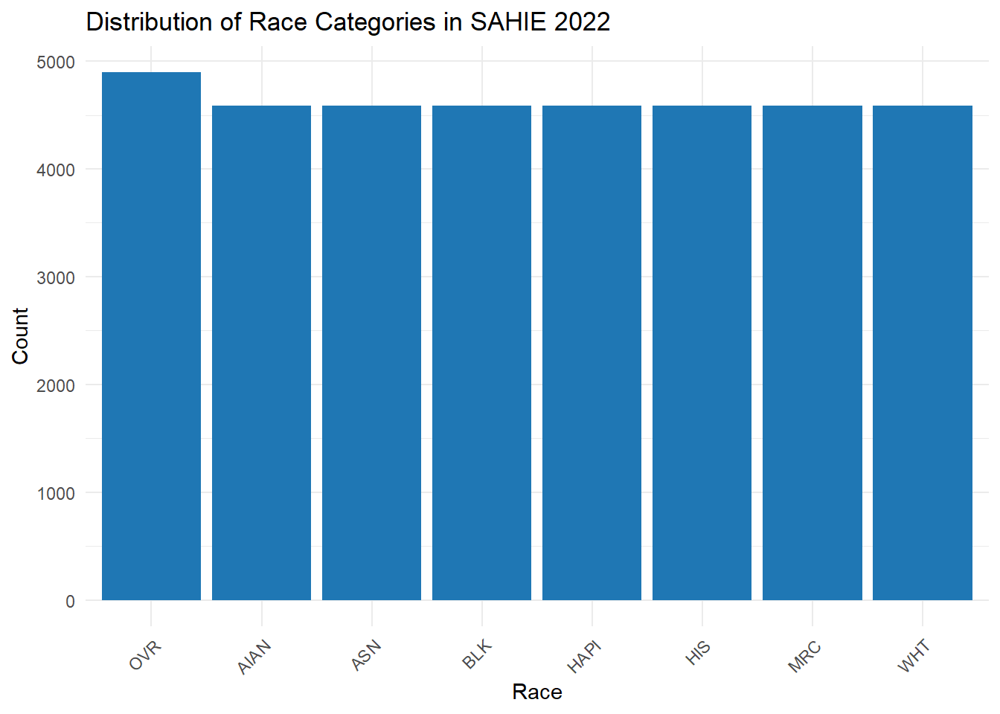
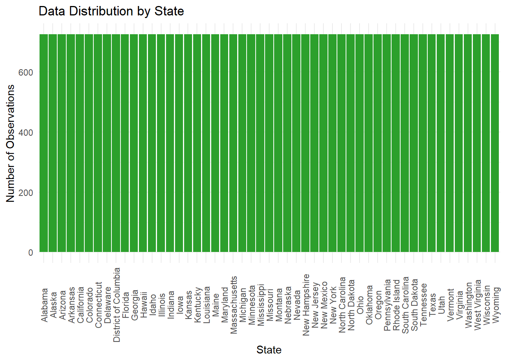
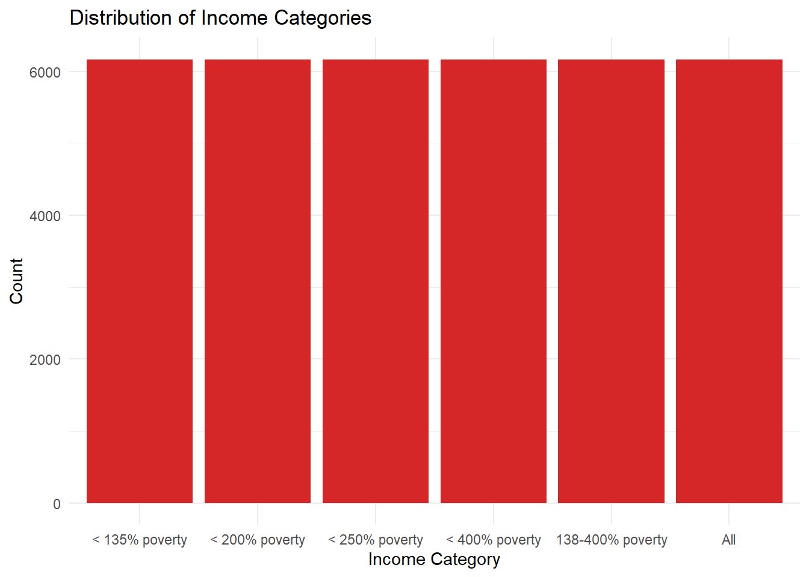
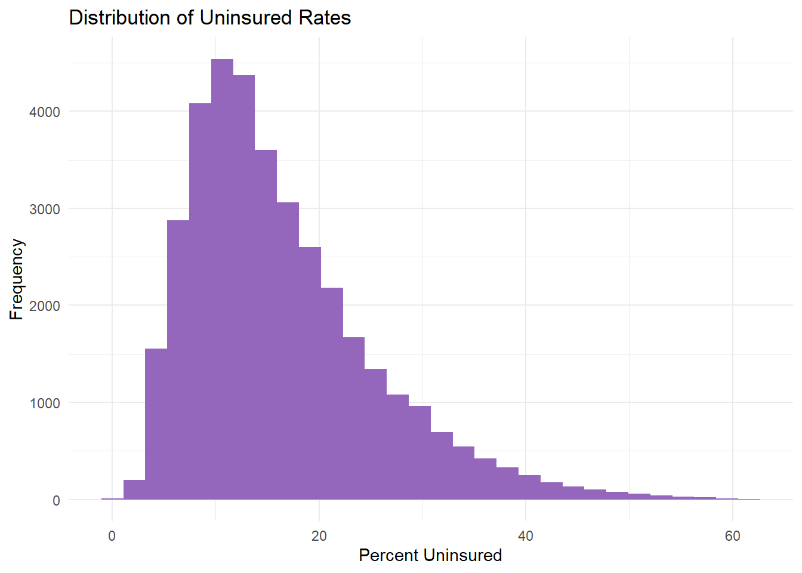

| Variable | Description |
|---|---|
| YearStart | The year the data was collected (2015-2022) |
| LocationDesc | The state or territory where the data was collected |
| Topic | The general category of the health data (e.g., Cardiovascular Disease, Diabetes, Mental Health) |
| Question | A specific health-related question (e.g., ‘Diabetes among adults’) |
| DataValueType | The type of data value (e.g., Crude Prevalence, Age-Adjusted Rate) |
| DataValue | The actual numerical value associated with a given health indicator |
| StratificationID1 | The specific stratification variable (e.g., ‘BLK’ for Black, ‘WHT’ for White, ‘HIS’ for Hispanic) |
| StratificationCategory1 | The category of stratification (e.g., Race/Ethnicity, Age, Gender) |
Data
We describe the sources of our data and the cleaning process.

Dataset 1: U.S. Chronic Disease Indicators (CDI)
Where to Find the Data
This dataset was published by the Centers for Disease Control and Prevention (CDC). It was developed through a collaborative effort involving the CDC, the Council of State and Territorial Epidemiologists, and the National Association of Chronic Disease Directors.
The dataset can be accessed directly from the CDC Chronic Disease Indicators Portal: CDC Chronic Disease Indicators Dataset
Why Was This Data Collected?
The CDI dataset was created to support public health surveillance, policy development, and program planning at both the state and national levels. It provides a standardized way for different states and territories to define, collect, and report chronic disease data, allowing for consistent comparisons across different regions and demographics.
The data is collected from multiple sources, including:
Behavioral Risk Factor Surveillance System (BRFSS)
Youth Risk Behavior Surveillance System (YRBSS)
National Vital Statistics System (NVSS)
United States Cancer Statistics (USCS)
Centers for Medicare & Medicaid Services (CMS) Data
Because the dataset compiles information from multiple sources, each data source has its own methodology, limitations, and potential biases. For example, BRFSS relies on telephone surveys, which may underrepresent individuals without stable phone access, and YRBSS focuses only on high school students, potentially excluding young people who are not enrolled in school. These factors must be carefully considered when analyzing the data.
Key Variables in Our Analysis
The original dataset consists of 309,215 rows and 34 columns, covering 115 chronic disease indicators across multiple health topics. Since our analysis focuses on racial disparities in chronic disease prevalence and management, we have selected the following key variables:
Although SAHIE includes a diverse set of racial categories, it aggregates smaller or multiracial groups in ways that may mask within-group disparities. For example, Native Hawaiian and Pacific Islander populations are not always distinguishable in smaller samples, limiting subgroup-specific insights.
Data Imbalances and Distribution
 Upon reviewing the dataset, we identified imbalances in data coverage across different health topics. Some health conditions, such as Cardiovascular Disease, Nutrition/Physical Activity/Weight, and Health Status, have over 19,000 recorded values, while others, such as Maternal Health and Chronic Kidney Disease, have fewer than 1,000 entries. 
Additionally, the LocationDesc variable appears to be mostly evenly distributed at first, but locations like the Virgin Islands, Puerto Rico, Guam, and Wyoming show up significantly less frequently than the rest of the locations. This suggests that each state or territory is not proportionately represented in the dataset.
Data Cleaning and Preprocessing
To prepare the dataset for analysis, we performed the following cleaning steps:
Selected Relevant Variables: We reduced the dataset to the eight most important columns related to disease prevalence, stratification categories, and geographic information.
Removed Missing Values: We used the na.omit() function to exclude any incomplete data points.
Filtered Out Extreme Outliers: Using a box plot analysis, we identified and removed eight unusually large values (greater than 1,000,000) in the DataValue column.
Checked for Unusual Frequencies: We visualized category distributions to detect imbalances in health topic coverage.
Cleaned Dataset File:
You can download the cleaned dataset used in our analysis here: Cleaned CDI Data
Cleaning Script:
For full transparency, our data cleaning script is available for review: Cleaning Script for CDI
Dataset 2: Small Area Health Insurance Estimates (SAHIE) using the American Community Survey (ACS)
Where to Find the Data
This dataset was published within the United States Census Bureau. The dataset can be accessed directly from the Small Area Health Insurance Estimates website: CDC Chronic Disease Indicators Dataset
Why Was This Data Collected?
The Small Area Health Insurance Estimates (SAHIE) program was created to develop model-based estimates of health insurance coverage for counties and states. This program builds on the work of the Small Area Income and Poverty Estimates (SAIPE) program. SAHIE is the only source of single-year health insurance coverage estimates.
SAHIE data can be used to analyze geographic variation in health insurance coverage, as well as disparities in coverage by race/ethnicity, sex, age and income levels that reflect thresholds for state and federal assistance programs. Because consistent estimates are available from 2008 to 2022, SAHIE reflects annual changes over time.
For 2008-2022, SAHIE publishes state and county estimates of population with and without health insurance coverage, along with measures of uncertainty, for the full cross-classification of:
5 age categories: 0-64, 18-64, 21-64, 40-64, and 50-64
3 sex categories: Both sexes, Male, and Female
6 income categories: All incomes, as well as the following income-to-poverty ratio (IPR) categories: 0-138%, 0-200%, 0-250%, 0-400%, and 138-400% of the poverty threshold
8 races/ethnicities (for states only): All races/ethnicities, White alone (not Hispanic or Latino), Black or African American alone (not Hispanic or Latino), American Indian and Alaska Native alone (not Hispanic or Latino), Asian alone (not Hispanic or Latino), Native Hawaiian and Other Pacific Islander alone (not Hispanic or Latino), Two or More Races (not Hispanic or Latino), Hispanic or Latino (any race).
Key Variables in Our Analysis
The original dataset consisted of 338,850 rows and 26 columns. Since the SAHIE files are large and updated yearly, we decided to focus on just the year 2022, since it is the most recent year on file. After cleaning out this dataset to better align with the aim of our analysis, it now contains 37,026 observations with 11 variables. This cleaned dataset allows us to analyze health insurance coverage across different states in a more focused manner, examining how it varies by sex, race, and age, as well as how income levels affect insurance rates—particularly in relation to the topics covered in our first dataset.
We have selected the following key variables for our analysis:
| Variable | Description |
|---|---|
| Age | Age category for the demographic group (e.g., Under 65, 18–64, 50–64) |
| Race | Race category (e.g., White alone, Black or African American alone, Hispanic or Latino) |
| Sex | Sex of the demographic group (Male, Female, or Both) |
| Income | Income category, based on percentage of the federal poverty level (e.g., ≤138%, ≤400%) |
| NIPR | Estimated number of people in the demographic group for a given income category |
| NUI | Estimated number of uninsured individuals in the demographic group |
| NIC | Estimated number of insured individuals in the demographic group |
| PCTUI | Estimated percentage of people uninsured in the demographic group |
| PCTIC | Estimated percentage of people insured in the demographic group |
| Location | Name of the state (e.g., California, Texas) |
| Year | The year the estimate was generated (2022) |
Data Imbalances and Distribution
To explore the distribution of key variables in the SAHIE 2022 dataset, we examined the frequency of observations across several demographic and geographic categories.

The distribution of age groups is mostly consistent across the dataset, with one notable exception: the Under 18 category appears significantly less frequently than the other age groups. This suggests that the dataset primarily focuses on adult populations, which aligns with the dataset’s goal of measuring health insurance coverage in working-age groups.



In contrast to the first dataset we analyzed, the SAHIE dataset shows a remarkably balanced distribution across race categories, income brackets, and states/territories. Each race group (e.g., White alone, Black alone, Hispanic/Latino) appears with similar frequency, and all income categories and U.S. locations are represented relatively evenly. This indicates that the dataset is not biased toward any specific population group or region, making it well-suited for demographic comparisons and equity-focused policy analysis.
ggplot(sahie_data, aes(x = PCTUI)) +
geom_histogram(fill = "#9467bd", bins = 30) +
labs(title = "Distribution of Uninsured Rates", x = "Percent Uninsured", y = "Frequency") +
theme_minimal()
Finally, a histogram of the percentage of uninsured individuals (PCTUI) reveals a right-skewed distribution, with most values clustering between 10% and 25%. The peak occurs around 15%, indicating that the majority of geographic and demographic groupings fall within this moderate uninsured rate range. However, the long right tail—extending past 40%—shows that some populations experience significantly higher uninsured rates. This variation highlights persistent disparities in access to health coverage and supports the need for targeted policy interventions.
Data Cleaning and Preprocessing
To prepare the SAHIE 2022 dataset for analysis, we performed the following data cleaning and transformation steps:
Filtered for State-Level Data: We removed all county-level observations by filtering out rows where county_name was not missing, leaving only state-level estimates for consistency across geographic units.
Selected and Renamed Relevant Columns: We narrowed the dataset to key demographic, insurance coverage, and geographic variables. We also renamed columns for readability (e.g., state_name became LocationDesc) as well as easier implementation with our first dataset.
Recoded Categorical Variables: The original dataset encoded demographic categories numerically. We recoded Age, Race, Sex, and Income into meaningful labels (e.g., Race == 2 became “BLK” for Black or African American).
Converted Data Types: Some numerical values (e.g., population counts and percentages) were stored as character strings with formatting symbols like commas and percent signs. We stripped these symbols and converted the values to numeric format to enable analysis.
This cleaning process ensured the dataset was consistent, interpretable, and analysis-ready
Cleaned Dataset File:
You can download the cleaned dataset used in our analysis here: Cleaned SAHIE Data
Cleaning Script:
For full transparency, our data cleaning script is available for review: Cleaning Script for SAHIE
Merged Dataset
…
Addtional R Packages
- Our group did not use any R packages in this analysis that were outside the scope of this class